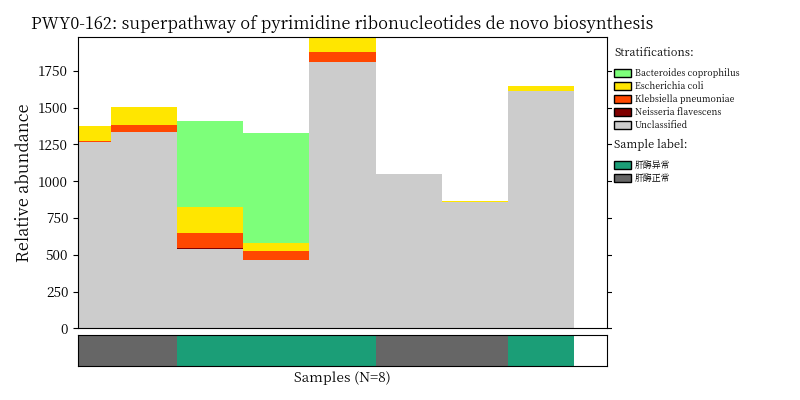
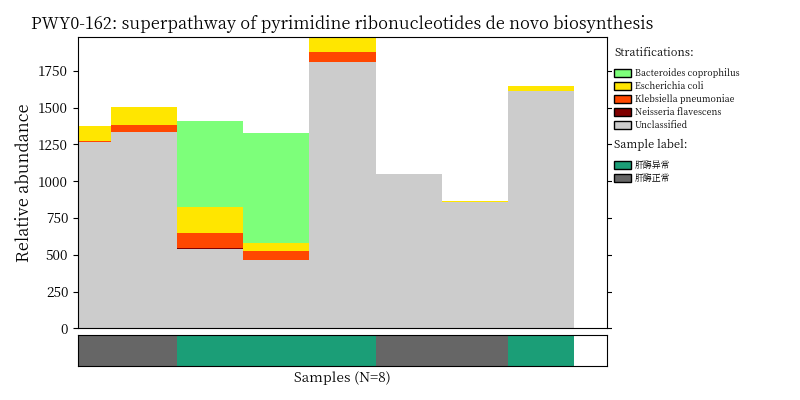
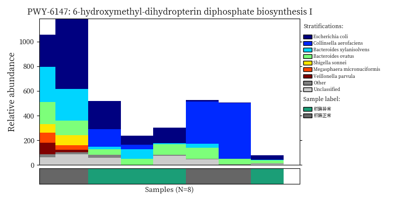
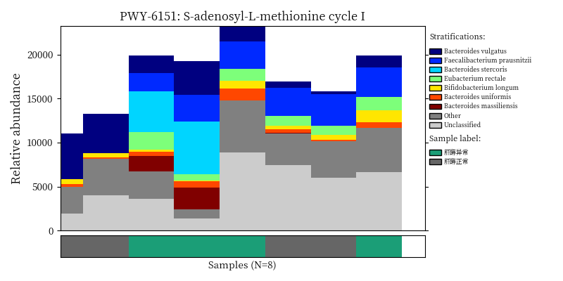
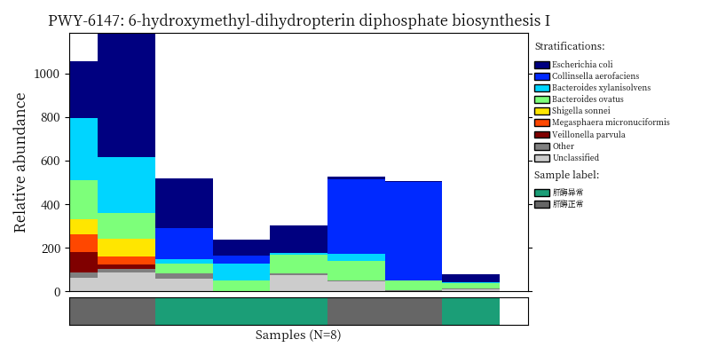
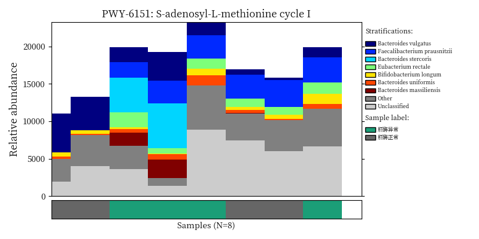

Chapter 2 Functional Analysis of Metacyc database
This demo provides guidance to standard data analysis of MetaCyc pathway data. Humman2 is used to annotate MGS reads with MetaCyc database.

FlowChart_MetaCyc
There are five 8 steps in this tutorial:
- Pipeline file processing
- Data loading
- Data preprocess
- Beta diversity
- Permanova test
- Differential analysis
- Bacteria contribution to pathway
2.1 Environment setup
In this chunk, required packages and functions would be loaded.
knitr::opts_chunk$set(warning = FALSE, message = FALSE)
## Remove all libraries and variables in current environment
rm(list = ls())
## Load packages
library(XMAS)
library(xviz)
library(data.table)
library(plotly)
library(xlsx)
library(magrittr)
## Load functions
source("/share/projects/SOP/Functional_Analysis/Tongbangzhuo/Phase1/Metacyc/RScript/permanova.R")
source("/share/projects/SOP/Functional_Analysis/Tongbangzhuo/Phase1/Metacyc/RScript/pathway2gene.R")
source("/share/projects/SOP/Functional_Analysis/Tongbangzhuo/Phase1/Kegg/Scripts/R/ultility.R")2.2 Pipeline file processing
As described in the introduction chapter, a cohort containing 8 MGS samples of 4 patients from 2 groups in MAFLD project would be used as demo data in this tutorial.
2.2.1 Merge sample files
Here we need to merge all data from 8 samples into one profile table with the merge script from Humann2 in Bash. But if you have merged the sample data already, please skip this chunk and jump to Data loading.
2.2.2 Split strain info
Output profile from Humann2 pipeline contains strain information, we need to split the profile file into two files in Bash. But if you have splitted the sample data already, please skip this chunk and jump to Data loading.
- unstratified profile file
- stratified profile file
grep -v "|" /share/projects/SOP/Functional_Analysis/Tongbangzhuo/Demodata/Metacyc/merged_metacyc_profile.tsv > /share/projects/SOP/Functional_Analysis/Tongbangzhuo/Demodata/Metacyc/merged_metacyc_profile_unstratified.tsv
grep -E "\\||pathabundance" /share/projects/SOP/Functional_Analysis/Tongbangzhuo/Demodata/Metacyc/merged_metacyc_profile.tsv > /share/projects/SOP/Functional_Analysis/Tongbangzhuo/Demodata/Metacyc/merged_metacyc_profile_stratified.tsv2.3 Data loading
2.3.1 Read metadata:
Read MetaCyc metadata from Demo folder.
metadata <- read.table("/share/projects/SOP/Functional_Analysis/Tongbangzhuo/Demodata/metadata.xls",header = TRUE,stringsAsFactors = FALSE) %>%
mutate(seqid = SeqID) %>% # keep seqid in the metadata
column_to_rownames("SeqID")
dim(metadata)## [1] 8 5## 样本管编号 患者.供体编号 样本名称 Group seqid
## 16453 CDXH001-1 CDXH001 LMYO 肝酶正常 16453
## 16455 CDXH001-2 CDXH001 LMYO 肝酶正常 16455
## 16456 CDXH002-1 CDXH002 LIGU 肝酶异常 16456
## 16457 CDXH002-2 CDXH002 LIGU 肝酶异常 16457
## 16465 CDXH009-1 CDXH009 ZHRO 肝酶正常 16465
## 16464 CDXH009-2 CDXH009 ZHRO 肝酶正常 164642.3.2 Read metaphlan2 profile table:
Read MetaCyc profile table from Demo folder.
pathwaydata <- read_delim("/share/projects/SOP/Functional_Analysis/Tongbangzhuo/Demodata/Metacyc/merged_metacyc_profile_unstratified.tsv", delim = "\t") %>%
mutate(`ID` = str_split_fixed(`ID`, ":", 2)[,1]) %>% # do not edit
column_to_rownames("ID") %>% # do not edit
t() %>% as.data.frame() %>% # do not edit
rownames_to_column("seq_id") %>% # do not edit
mutate(seq_id=str_remove_all(seq_id, "_.+")) %>% # do not edit
filter(seq_id %in% metadata$seqid) %>% # *** only keep samples in metadata, edit if needed ***
column_to_rownames("seq_id") %>% # do not edit
t() %>% as.data.frame() %>% # do not edit
rownames_to_column("pathway") %>% # do not edit
filter(rowSums(.[,-1]) > 0) %>% # do not edit
column_to_rownames("pathway") # do not edit
dim(pathwaydata)## [1] 386 82.4 Data preprocess
2.4.1 Transforming data
In this chunk, we use TSS (Total sum scaling) to eliminate the influence of sequencing depth on samples.
rescaled_pathwaydata <- pathwaydata %>% apply(., 2, function(x) x/sum(x)) %>% as.data.frame()
dim(rescaled_pathwaydata)## [1] 386 82.4.2 Remove unppaed pathways
Note: you need to transform your data into relative abundance before running this chunk!!
rescaled_pathway.clean <- rescaled_pathwaydata %>%
rownames_to_column("pathway") %>%
filter(!pathway %in% c("UNMAPPED","UNINTEGRATED")) %>%
column_to_rownames("pathway")
dim(rescaled_pathway.clean)## [1] 384 82.4.3 Aggregate low abundance data
In this chunck, we aggregate low abundance features to one row. Note: you need to transform and Remove unppaed pathways in your data before running this chunk!!
1e-12 is an empirical threshold fot filtering low abundance feature. According to published paper Obese Individuals with and without Type 2 Diabetes Show Different Gut Microbial Functional Capacity and Composition
pathway with top 50% mean abundance and top 50% variance are left. But in MaAsLin2，pathway with abundance less than 10-10 are filtered by default.
pathway.clean <- aggregate_low_abundance(input_data = rescaled_pathway.clean,
threshold = 1e-12) ## threshold should be modified based on your on study
dim(pathway.clean)## [1] 384 82.5 Plot Beta diversity
In this chunk, we plot PCoA with Bray-Curtis distance as example.
plot_beta_diversity is a fucntion in XVIZ working on calculating the beta diversity distance and visualzing output. Input of plot_beta_diversity should be a phyloseq object.
phyloseq(otu_table(pathway.clean, taxa_are_rows = T), sample_data(metadata)) %>%
plot_beta_diversity(feature = "Group",add_pc1 = TRUE, add_pc2 = TRUE)2.6 Permanova test
run_permanova_betadisp is a function in XMAS working on doing dispersion test and PERMANOVA test.
The first output is dispersion test and the second output is PERMANOVA test.
phyloseq(otu_table(pathway.clean, taxa_are_rows = T), sample_data(metadata)) %>%
run_permanova_betadisp(vars = "Group")## $betadisp_res
## variable p_value analysis
## 1 Group 0.421 beta_dispersion_permutation999
##
## $permanova_res
## variable p_value R2 analysis
## 1 Group 0.512 0.1041111 permanova_permutation9992.7 Differential analysis(DA)
2.7.1 Filter low prevalence pathway
In this chunk, we would remove pathways apperaing in less than max(2 , 5% of samples) from data set before doing analysis. Remember to run Data preprocess section before running this chunk!
pathway.filter <- XMAS::filter_prevalence(otu_table = pathway.clean,
metadata = metadata.clean,
threshold = 0.05,
taxa_are_rows = TRUE)
dim(pathway.clean)## [1] 384 8## [1] 373 82.7.2 LefSE
Remember to Filter low prevalence pathway before running this chunk!
da_pathway = phyloseq(otu_table(pathway.filter, taxa_are_rows = T), sample_data(metadata)) %>%
lefse_mgs(compvar = "Group") %>%
.$DA_features
da_pathway$id %<>% str_replace_all("_","-")2.8 Bacteria contribution to differential pathways
Use script from Humann2 to visualize the species contribution to differential MetaCyc pathways.
2.8.1 Generate input from contribution barplot
options(stringsAsFactors = FALSE)
pathway_stratified <- read_delim("/share/projects/SOP/Functional_Analysis/Tongbangzhuo/Demodata/Metacyc/merged_metacyc_profile_stratified.tsv", delim = "\t") %>%
column_to_rownames("ID") %>%
t() %>%
as.data.frame() %>%
rownames_to_column("seq_id") %>%
mutate(seq_id=str_remove_all(seq_id, "_.+")) %>%
filter(seq_id %in% metadata$seqid) %>%
column_to_rownames("seq_id") %>%
t() %>%
as.data.frame() %>%
.[apply(.>0, 1, any),] %>%
# .[apply(.>0,1, function(x) sum(x) > 4),] %>%
rownames_to_column("pathwayID") %>%
mutate(PathwayID=str_split_fixed(pathwayID,":",2)[,1]) %>%
mutate(Introduce=str_split_fixed(str_split_fixed(pathwayID,":",2)[,2],"\\|",2)[,1]) %>%
mutate(Genus=str_split_fixed(str_split_fixed(pathwayID,"\\|",2)[,2], "\\.", 2)[,1]) %>%
mutate(Species=str_split_fixed(str_split_fixed(pathwayID,"\\|",2)[,2], "\\.", 2)[,2]) %>%
mutate(Species=str_replace(Species, "s__", ""))
pathway_list <- pathway_stratified %>% as.data.frame() %>%
dplyr::select(PathwayID, Species) %>%
filter((!str_detect(PathwayID, "UNINTEGRATED")) & (PathwayID %in% da_pathway$id) & Species!="") %>%
pivot_wider(names_from = "Species",values_from = "Species") %>%
column_to_rownames("PathwayID") %>% .[apply(.,1,function(x) sum(!is.na(x))) >= 2,] %>%
rownames()
pathway_stratified %>%
column_to_rownames("pathwayID") %>%
t() %>%
as.data.frame() %>%
rownames_to_column("seqid") %>%
merge(metadata %>% dplyr::select(c(Group, seqid)), ., by="seqid") %>%
filter(seqid %in% metadata$seqid) %>%
column_to_rownames("seqid") %>%
t() %>%
as.data.frame() %>%
rownames_to_column("pathwayID") %>%
write.table(.,"/share/projects/SOP/Functional_Analysis/Tongbangzhuo/Demodata/Metacyc/merged_relab_pathabundance_stratified.pcl", row.names = FALSE, quote = FALSE, sep = "\t")
for (i in pathway_list) {
commond_text <- "/home/tongbangzhuo/Software/miniconda3/bin/python /share/projects/SOP/Functional_Analysis/Tongbangzhuo/Phase1/Metacyc/humann2_barplot.py --input /share/projects/SOP/Functional_Analysis/Tongbangzhuo/Demodata/Metacyc/merged_relab_pathabundance_stratified.pcl --focal-feature ${pathwayID} --focal-metadatum Group --last-metadatum Group -d 8 4 --output /share/projects/SOP/Functional_Analysis/github/Functional_analysis/output/MetaCyc/${pathwayID}.png -e 0.8"
commond_text <- stringr::str_interp(commond_text, list(pathwayID = i))
system(commond_text)
}2.8.2 Plot Bacteria contribution
image_path <- NULL
image_path <- system('ls /share/projects/SOP/Functional_Analysis/github/Functional_analysis/output/MetaCyc/*PWY*png', intern = TRUE) %>% unlist() %>% as.character() %>% as.vector() %>% .[1:5]
## In the graph(s) below, green KO are those KOs enriched in GroupB, red KO are those KOs enriched in GroupA
knitr::include_graphics(image_path) 
 

2.9 Session info
## ─ Session info ────────────────────────────────────────────────────────────────────────────────────────────────────────────────────────────────────────────────────────
## setting value
## version R version 3.6.3 (2020-02-29)
## os Ubuntu 16.04.7 LTS
## system x86_64, linux-gnu
## ui RStudio
## language (EN)
## collate en_IN.UTF-8
## ctype en_IN.UTF-8
## tz Asia/Hong_Kong
## date 2022-09-13
## rstudio 1.1.419 (server)
## pandoc 2.7.3 @ /usr/bin/ (via rmarkdown)
##
## ─ Packages ────────────────────────────────────────────────────────────────────────────────────────────────────────────────────────────────────────────────────────────
## ! package * version date (UTC) lib source
## abind 1.4-5 2016-07-21 [1] CRAN (R 3.6.3)
## ade4 1.7-17 2021-06-17 [1] CRAN (R 3.6.3)
## ALDEx2 * 1.18.0 2019-10-29 [1] Bioconductor
## annotate 1.64.0 2019-10-29 [1] Bioconductor
## AnnotationDbi * 1.48.0 2019-10-29 [1] Bioconductor
## ape 5.5 2021-04-25 [1] CRAN (R 3.6.3)
## assertthat 0.2.1 2019-03-21 [2] CRAN (R 3.6.3)
## backports 1.4.1 2021-12-13 [1] CRAN (R 3.6.3)
## base64enc 0.1-3 2015-07-28 [2] CRAN (R 3.6.3)
## bayesm 3.1-4 2019-10-15 [1] CRAN (R 3.6.3)
## biglm 0.9-2.1 2020-11-27 [1] CRAN (R 3.6.3)
## Biobase * 2.46.0 2019-10-29 [2] Bioconductor
## BiocGenerics * 0.32.0 2019-10-29 [2] Bioconductor
## BiocParallel * 1.20.1 2019-12-21 [2] Bioconductor
## biomformat 1.14.0 2019-10-29 [1] Bioconductor
## Biostrings 2.54.0 2019-10-29 [1] Bioconductor
## bit 4.0.4 2020-08-04 [1] CRAN (R 3.6.3)
## bit64 4.0.5 2020-08-30 [1] CRAN (R 3.6.3)
## bitops 1.0-7 2021-04-24 [1] CRAN (R 3.6.3)
## blob 1.2.2 2021-07-23 [1] CRAN (R 3.6.3)
## bookdown 0.24 2021-09-02 [1] CRAN (R 3.6.3)
## brio 1.1.3 2021-11-30 [2] CRAN (R 3.6.3)
## broom 0.7.12 2022-01-28 [1] CRAN (R 3.6.3)
## bslib 0.3.1 2021-10-06 [1] CRAN (R 3.6.3)
## cachem 1.0.5 2021-05-15 [1] CRAN (R 3.6.3)
## callr 3.7.0 2021-04-20 [2] CRAN (R 3.6.3)
## car 3.0-12 2021-11-06 [1] CRAN (R 3.6.3)
## carData 3.0-4 2020-05-22 [1] CRAN (R 3.6.3)
## caTools 1.18.2 2021-03-28 [1] CRAN (R 3.6.3)
## cellranger 1.1.0 2016-07-27 [1] CRAN (R 3.6.3)
## checkmate 2.0.0 2020-02-06 [1] CRAN (R 3.6.3)
## circlize * 0.4.13 2021-06-09 [1] CRAN (R 3.6.3)
## cli 3.1.0 2021-10-27 [1] CRAN (R 3.6.3)
## clue 0.3-59 2021-04-16 [1] CRAN (R 3.6.3)
## cluster 2.1.0 2019-06-19 [2] CRAN (R 3.6.3)
## coda 0.19-4 2020-09-30 [1] CRAN (R 3.6.3)
## codetools 0.2-16 2018-12-24 [2] CRAN (R 3.6.3)
## coin 1.4-2 2021-10-08 [1] CRAN (R 3.6.3)
## colorspace 2.0-2 2021-06-24 [1] CRAN (R 3.6.3)
## ComplexHeatmap * 2.2.0 2019-10-29 [1] Bioconductor
## compositions 2.0-2 2021-07-14 [1] CRAN (R 3.6.3)
## cowplot * 1.1.1 2020-12-30 [1] CRAN (R 3.6.3)
## crayon 1.5.0 2022-02-14 [1] CRAN (R 3.6.3)
## curl 4.3.2 2021-06-23 [2] CRAN (R 3.6.3)
## dada2 * 1.14.1 2020-02-22 [1] Bioconductor
## data.table * 1.14.0 2021-02-21 [1] CRAN (R 3.6.3)
## DBI 1.1.1 2021-01-15 [1] CRAN (R 3.6.3)
## dbplyr 2.1.1 2021-04-06 [1] CRAN (R 3.6.3)
## DelayedArray * 0.12.3 2020-04-09 [2] Bioconductor
## DelayedMatrixStats 1.8.0 2019-10-29 [1] Bioconductor
## DEoptimR 1.0-9 2021-05-24 [1] CRAN (R 3.6.3)
## desc 1.4.1 2022-03-06 [2] CRAN (R 3.6.3)
## DESeq2 * 1.26.0 2019-10-29 [1] Bioconductor
## devtools 2.4.3 2021-11-30 [1] CRAN (R 3.6.3)
## digest 0.6.29 2021-12-01 [1] CRAN (R 3.6.3)
## dplyr * 1.0.6 2021-05-05 [1] CRAN (R 3.6.3)
## edgeR 3.28.1 2020-02-26 [1] Bioconductor
## ellipsis 0.3.2 2021-04-29 [1] CRAN (R 3.6.3)
## EnhancedVolcano * 1.4.0 2019-10-29 [1] Bioconductor
## enrichR * 3.0 2021-02-02 [1] CRAN (R 3.6.3)
## evaluate 0.15 2022-02-18 [2] CRAN (R 3.6.3)
## fansi 1.0.2 2022-01-14 [1] CRAN (R 3.6.3)
## farver 2.1.0 2021-02-28 [2] CRAN (R 3.6.3)
## fastmap 1.1.0 2021-01-25 [1] CRAN (R 3.6.3)
## fdrtool 1.2.17 2021-11-13 [1] CRAN (R 3.6.3)
## forcats * 0.5.1 2021-01-27 [1] CRAN (R 3.6.3)
## foreach 1.5.2 2022-02-02 [2] CRAN (R 3.6.3)
## foreign 0.8-75 2020-01-20 [2] CRAN (R 3.6.3)
## formatR 1.12 2022-03-31 [2] CRAN (R 3.6.3)
## Formula 1.2-4 2020-10-16 [1] CRAN (R 3.6.3)
## fs 1.5.2 2021-12-08 [1] CRAN (R 3.6.3)
## futile.logger 1.4.3 2016-07-10 [2] CRAN (R 3.6.3)
## futile.options 1.0.1 2018-04-20 [2] CRAN (R 3.6.3)
## genefilter 1.68.0 2019-10-29 [1] Bioconductor
## geneplotter 1.64.0 2019-10-29 [1] Bioconductor
## generics 0.1.2 2022-01-31 [1] CRAN (R 3.6.3)
## GenomeInfoDb * 1.22.1 2020-03-27 [2] Bioconductor
## GenomeInfoDbData 1.2.2 2020-08-24 [2] Bioconductor
## GenomicAlignments 1.22.1 2019-11-12 [1] Bioconductor
## GenomicRanges * 1.38.0 2019-10-29 [2] Bioconductor
## getopt 1.20.3 2019-03-22 [1] CRAN (R 3.6.3)
## GetoptLong 1.0.5 2020-12-15 [1] CRAN (R 3.6.3)
## GGally * 2.1.2 2021-06-21 [1] CRAN (R 3.6.3)
## ggbipart * 0.1.2 2022-07-20 [1] Github (pedroj/bipartite_plots@162f577)
## ggExtra * 0.9 2019-08-27 [1] CRAN (R 3.6.3)
## ggplot2 * 3.3.5 2021-06-25 [1] CRAN (R 3.6.3)
## ggpubr * 0.4.0 2020-06-27 [1] CRAN (R 3.6.3)
## ggrepel * 0.9.1 2021-01-15 [2] CRAN (R 3.6.3)
## ggsci * 2.9 2018-05-14 [1] CRAN (R 3.6.3)
## ggsignif 0.6.3 2021-09-09 [1] CRAN (R 3.6.3)
## glmnet 4.1-2 2021-06-24 [1] CRAN (R 3.6.3)
## GlobalOptions 0.1.2 2020-06-10 [1] CRAN (R 3.6.3)
## glue 1.6.1 2022-01-22 [1] CRAN (R 3.6.3)
## GMPR 0.1.3 2021-05-17 [1] local
## gplots 3.1.1 2020-11-28 [1] CRAN (R 3.6.3)
## graph 1.64.0 2019-10-29 [1] Bioconductor
## gridExtra 2.3 2017-09-09 [2] CRAN (R 3.6.3)
## gtable 0.3.0 2019-03-25 [2] CRAN (R 3.6.3)
## gtools 3.9.2 2021-06-06 [1] CRAN (R 3.6.3)
## haven 2.4.1 2021-04-23 [1] CRAN (R 3.6.3)
## highr 0.9 2021-04-16 [1] CRAN (R 3.6.3)
## Hmisc 4.5-0 2021-02-28 [1] CRAN (R 3.6.3)
## hms 1.1.1 2021-09-26 [1] CRAN (R 3.6.3)
## htmlTable 2.3.0 2021-10-12 [1] CRAN (R 3.6.3)
## htmltools 0.5.2 2021-08-25 [1] CRAN (R 3.6.3)
## htmlwidgets 1.5.4 2021-09-08 [2] CRAN (R 3.6.3)
## httpuv 1.6.1 2021-05-07 [1] CRAN (R 3.6.3)
## httr 1.4.3 2022-05-04 [2] CRAN (R 3.6.3)
## hwriter 1.3.2 2014-09-10 [1] CRAN (R 3.6.3)
## igraph 1.3.1 2022-04-20 [2] CRAN (R 3.6.3)
## IHW 1.14.0 2019-10-29 [1] Bioconductor
## IRanges * 2.20.2 2020-01-13 [2] Bioconductor
## iterators 1.0.14 2022-02-05 [2] CRAN (R 3.6.3)
## jpeg 0.1-9 2021-07-24 [1] CRAN (R 3.6.3)
## jquerylib 0.1.4 2021-04-26 [1] CRAN (R 3.6.3)
## jsonlite 1.8.0 2022-02-22 [2] CRAN (R 3.6.3)
## KEGGgraph 1.46.0 2019-10-29 [1] Bioconductor
## KEGGREST 1.26.1 2019-11-06 [1] Bioconductor
## KernSmooth 2.23-16 2019-10-15 [2] CRAN (R 3.6.3)
## knitr 1.36 2021-09-29 [1] CRAN (R 3.6.3)
## labeling 0.4.2 2020-10-20 [2] CRAN (R 3.6.3)
## lambda.r 1.2.4 2019-09-18 [2] CRAN (R 3.6.3)
## later 1.3.0 2021-08-18 [2] CRAN (R 3.6.3)
## lattice * 0.20-38 2018-11-04 [2] CRAN (R 3.6.3)
## latticeExtra 0.6-29 2019-12-19 [1] CRAN (R 3.6.3)
## lazyeval 0.2.2 2019-03-15 [2] CRAN (R 3.6.3)
## libcoin 1.0-9 2021-09-27 [1] CRAN (R 3.6.3)
## lifecycle 1.0.1 2021-09-24 [1] CRAN (R 3.6.3)
## limma 3.42.2 2020-02-03 [2] Bioconductor
## locfit 1.5-9.4 2020-03-25 [1] CRAN (R 3.6.3)
## lpsymphony 1.14.0 2019-10-29 [1] Bioconductor (R 3.6.3)
## lubridate 1.7.10 2021-02-26 [1] CRAN (R 3.6.3)
## Maaslin2 1.7.3 2022-03-23 [1] Github (biobakery/maaslin2@8d090e4)
## magrittr * 2.0.2 2022-01-26 [1] CRAN (R 3.6.3)
## MASS 7.3-54 2021-05-03 [1] CRAN (R 3.6.3)
## Matrix 1.3-4 2021-06-01 [1] CRAN (R 3.6.3)
## matrixStats * 0.60.0 2021-07-26 [1] CRAN (R 3.6.3)
## mbzinb 0.2 2021-06-23 [1] local
## memoise 2.0.1 2021-11-26 [2] CRAN (R 3.6.3)
## metagenomeSeq 1.28.2 2020-02-03 [1] Bioconductor
## metamicrobiomeR 1.1 2021-02-03 [1] local
## mgcv 1.8-31 2019-11-09 [2] CRAN (R 3.6.3)
## microbiome 1.8.0 2019-10-29 [1] Bioconductor
## mime 0.12 2021-09-28 [2] CRAN (R 3.6.3)
## miniUI 0.1.1.1 2018-05-18 [1] CRAN (R 3.6.3)
## modelr 0.1.8 2020-05-19 [1] CRAN (R 3.6.3)
## modeltools 0.2-23 2020-03-05 [1] CRAN (R 3.6.3)
## multcomp 1.4-17 2021-04-29 [1] CRAN (R 3.6.3)
## multtest 2.42.0 2019-10-29 [2] Bioconductor
## munsell 0.5.0 2018-06-12 [2] CRAN (R 3.6.3)
## mvtnorm 1.1-3 2021-10-08 [1] CRAN (R 3.6.3)
## network * 1.17.1 2021-06-14 [1] CRAN (R 3.6.3)
## nlme 3.1-144 2020-02-06 [2] CRAN (R 3.6.3)
## nnet 7.3-12 2016-02-02 [2] CRAN (R 3.6.3)
## optparse 1.7.1 2021-10-08 [1] CRAN (R 3.6.3)
## org.Hs.eg.db * 3.10.0 2021-12-08 [1] Bioconductor
## pathview * 1.26.0 2019-10-29 [1] Bioconductor
## pcaPP 1.9-74 2021-04-23 [1] CRAN (R 3.6.3)
## permute * 0.9-5 2019-03-12 [1] CRAN (R 3.6.3)
## phyloseq * 1.30.0 2019-10-29 [1] Bioconductor
## pillar 1.7.0 2022-02-01 [1] CRAN (R 3.6.3)
## pkgbuild 1.3.1 2021-12-20 [2] CRAN (R 3.6.3)
## pkgconfig 2.0.3 2019-09-22 [2] CRAN (R 3.6.3)
## pkgload 1.2.4 2021-11-30 [2] CRAN (R 3.6.3)
## plotly * 4.10.0 2021-10-09 [1] CRAN (R 3.6.3)
## plyr 1.8.7 2022-03-24 [2] CRAN (R 3.6.3)
## png 0.1-7 2013-12-03 [1] CRAN (R 3.6.3)
## prettyunits 1.1.1 2020-01-24 [2] CRAN (R 3.6.3)
## processx 3.5.3 2022-03-25 [2] CRAN (R 3.6.3)
## promises 1.2.0.1 2021-02-11 [2] CRAN (R 3.6.3)
## protoclust 1.6.3 2019-01-31 [1] CRAN (R 3.6.3)
## ps 1.7.0 2022-04-23 [2] CRAN (R 3.6.3)
## pscl 1.5.5 2020-03-07 [1] CRAN (R 3.6.3)
## purrr * 0.3.4 2020-04-17 [2] CRAN (R 3.6.3)
## qvalue 2.18.0 2019-10-29 [1] Bioconductor
## R6 2.5.1 2021-08-19 [1] CRAN (R 3.6.3)
## RAIDA 1.0 2021-06-23 [1] local
## ranacapa 0.1.0 2021-06-18 [1] Github (gauravsk/ranacapa@58c0cab)
## RColorBrewer * 1.1-3 2022-04-03 [2] CRAN (R 3.6.3)
## Rcpp * 1.0.7 2021-07-07 [1] CRAN (R 3.6.3)
## RcppParallel 5.1.4 2021-05-04 [1] CRAN (R 3.6.3)
## RCurl 1.98-1.6 2022-02-08 [2] CRAN (R 3.6.3)
## readr * 2.0.0 2021-07-20 [1] CRAN (R 3.6.3)
## readxl * 1.3.1 2019-03-13 [1] CRAN (R 3.6.3)
## remotes 2.4.2 2021-11-30 [1] CRAN (R 3.6.3)
## reprex 2.0.1 2021-08-05 [1] CRAN (R 3.6.3)
## reshape 0.8.9 2022-04-12 [1] CRAN (R 3.6.3)
## reshape2 * 1.4.4 2020-04-09 [2] CRAN (R 3.6.3)
## Rgraphviz 2.30.0 2019-10-29 [1] Bioconductor
## rhdf5 2.30.1 2019-11-26 [1] Bioconductor
## Rhdf5lib 1.8.0 2019-10-29 [1] Bioconductor
## rJava 1.0-5 2021-09-24 [1] CRAN (R 3.6.3)
## rjson 0.2.20 2018-06-08 [1] CRAN (R 3.6.3)
## R rlang 1.0.2 <NA> [2] <NA>
## rmarkdown 2.11 2021-09-14 [1] CRAN (R 3.6.3)
## robustbase 0.93-9 2021-09-27 [1] CRAN (R 3.6.3)
## rpart 4.1-15 2019-04-12 [2] CRAN (R 3.6.3)
## rprojroot 2.0.2 2020-11-15 [1] CRAN (R 3.6.3)
## Rsamtools 2.2.3 2020-02-23 [1] Bioconductor
## rsconnect 0.8.25 2021-11-19 [1] CRAN (R 3.6.3)
## RSQLite 2.2.7 2021-04-22 [1] CRAN (R 3.6.3)
## rstatix 0.7.0 2021-02-13 [1] CRAN (R 3.6.3)
## rstudioapi 0.13 2020-11-12 [2] CRAN (R 3.6.3)
## Rtsne 0.15 2018-11-10 [1] CRAN (R 3.6.3)
## rvest 1.0.2 2021-10-16 [1] CRAN (R 3.6.3)
## S4Vectors * 0.24.4 2020-04-09 [2] Bioconductor
## sandwich 3.0-1 2021-05-18 [1] CRAN (R 3.6.3)
## sass 0.4.0 2021-05-12 [1] CRAN (R 3.6.3)
## scales 1.2.0 2022-04-13 [2] CRAN (R 3.6.3)
## seqinr * 4.2-8 2021-06-09 [1] CRAN (R 3.6.3)
## sessioninfo 1.2.2 2021-12-06 [2] CRAN (R 3.6.3)
## shape 1.4.6 2021-05-19 [1] CRAN (R 3.6.3)
## shiny 1.7.1 2021-10-02 [1] CRAN (R 3.6.3)
## ShortRead 1.44.3 2020-02-03 [1] Bioconductor
## slam 0.1-49 2021-11-17 [1] CRAN (R 3.6.3)
## sna 2.6 2020-10-06 [1] CRAN (R 3.6.3)
## statnet.common 4.5.0 2021-06-05 [1] CRAN (R 3.6.3)
## stringi 1.7.4 2021-08-25 [1] CRAN (R 3.6.3)
## stringr * 1.4.0 2019-02-10 [2] CRAN (R 3.6.3)
## SummarizedExperiment * 1.16.1 2019-12-19 [2] Bioconductor
## survival 3.1-8 2019-12-03 [2] CRAN (R 3.6.3)
## tensorA 0.36.2 2020-11-19 [1] CRAN (R 3.6.3)
## testthat 3.1.4 2022-04-26 [2] CRAN (R 3.6.3)
## textshape 1.7.3 2021-05-28 [1] CRAN (R 3.6.3)
## TH.data 1.1-0 2021-09-27 [1] CRAN (R 3.6.3)
## tibble * 3.1.6 2021-11-07 [1] CRAN (R 3.6.3)
## tidyr * 1.2.0 2022-02-01 [1] CRAN (R 3.6.3)
## tidyselect 1.1.1 2021-04-30 [1] CRAN (R 3.6.3)
## tidyverse * 1.3.1 2021-04-15 [1] CRAN (R 3.6.3)
## tzdb 0.2.0 2021-10-27 [1] CRAN (R 3.6.3)
## UpSetR 1.4.0 2019-05-22 [1] CRAN (R 3.6.3)
## usethis 2.1.6 2022-05-25 [2] CRAN (R 3.6.3)
## utf8 1.2.2 2021-07-24 [1] CRAN (R 3.6.3)
## vctrs 0.3.8 2021-04-29 [1] CRAN (R 3.6.3)
## vegan * 2.5-7 2020-11-28 [1] CRAN (R 3.6.3)
## VennDiagram 1.7.1 2021-12-02 [1] CRAN (R 3.6.3)
## viridisLite 0.4.0 2021-04-13 [2] CRAN (R 3.6.3)
## vroom 1.5.7 2021-11-30 [1] CRAN (R 3.6.3)
## wesanderson * 0.3.6.9000 2021-07-21 [1] Github (karthik/wesanderson@651c944)
## withr 2.4.3 2021-11-30 [1] CRAN (R 3.6.3)
## Wrench 1.4.0 2019-10-29 [1] Bioconductor
## xfun 0.23 2021-05-15 [1] CRAN (R 3.6.3)
## xlsx * 0.6.5 2020-11-10 [1] CRAN (R 3.6.3)
## xlsxjars 0.6.1 2014-08-22 [1] CRAN (R 3.6.3)
## XMAS * 0.0.0.9000 2022-03-23 [1] local
## XMAS2 2.1.7.9 2022-09-09 [2] local
## XML 3.99-0.3 2020-01-20 [1] CRAN (R 3.6.3)
## xml2 1.3.3 2021-11-30 [2] CRAN (R 3.6.3)
## xtable 1.8-4 2019-04-21 [1] CRAN (R 3.6.3)
## XVector 0.26.0 2019-10-29 [2] Bioconductor
## xviz * 1.1.0 2021-01-14 [1] local
## yaml 2.2.2 2022-01-25 [1] CRAN (R 3.6.3)
## zlibbioc 1.32.0 2019-10-29 [2] Bioconductor
## zoo 1.8-9 2021-03-09 [1] CRAN (R 3.6.3)
##
## [1] /share/home/tongbangzhuo/R/x86_64-pc-linux-gnu-library/3.6
## [2] /opt/R-3.6.3/lib/R/library
##
## R ── Package was removed from disk.
##
## ───────────────────────────────────────────────────────────────────────────────────────────────────────────────────────────────────────────────────────────────────────